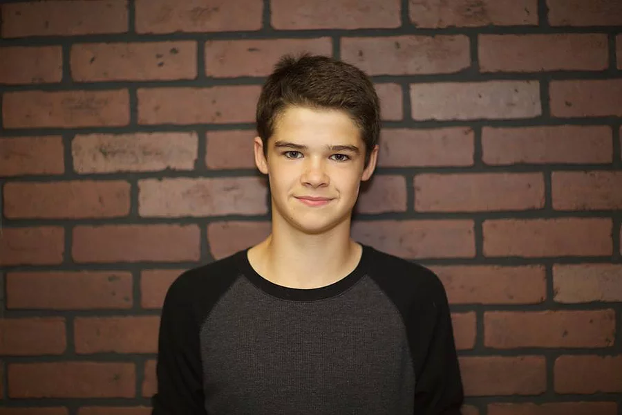

Sam Gamble

Sam Gamble is a 14 year old aspiring drummer who is currently in 8th grade. He briefly played guitar before discovering his love of hitting things with sticks and has never looked back. He enjoys playing classic rock but sometimes certain pop songs just hit the spot! Some of his favorite music includes AC/DC, Queen and Billy Joel. Being part of Meltdown Cinema has really escalated his love of music. He has truly enjoyed his time in the band and looks forward to many more gigs with his talented and amazing bandmates!